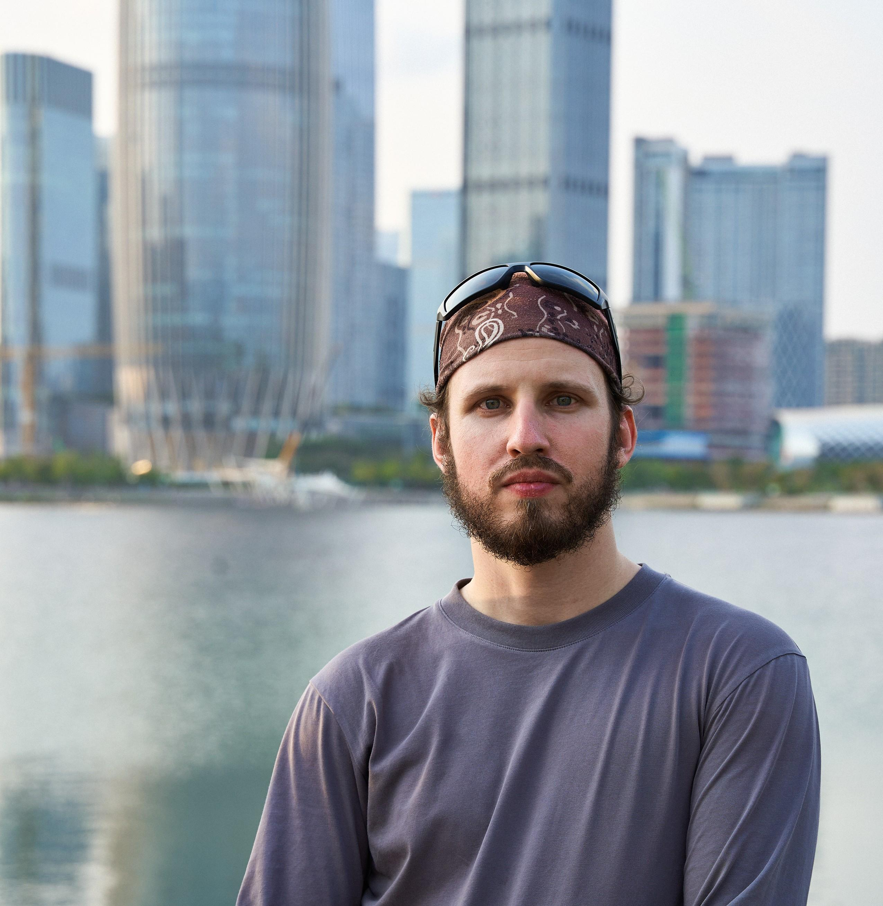

Pavel Mosharev
Physicist and algorithm researcher
Quantum and quantum-inspired optimization
I study quantum and quantum-inspired algorithms for combinatorial optimization through mechanism-focused analysis and reproducible numerical experiments. My background spans theoretical physics, university teaching, and industrial algorithm R&D at Huawei.

Current affiliation
Postdoctoral Researcher
University of Science and Technology of China
School of Physical Sciences
Based in Shenzhen, China
Research interests
Combinatorial optimization; quantum and quantum-inspired algorithms; Ising/QUBO/HUBO models; QAOA and shallow quantum circuits; energy landscapes and algorithm behavior.
About
I grew up in a small village near Arkhangelsk in the Russian North.
Moving to Moscow to study physics at Moscow State University was the first major change in my life. MSU gave me my scientific foundation; Moscow opened a much larger world and sparked a lasting interest in how cities, transport, institutions, and everyday systems work. I completed my PhD there and spent several years teaching mathematics and physics at university level.
Huawei brought the second major transition. I joined as an algorithm engineer and moved to China in 2022, eventually settling in Shenzhen. The move took me from academic physics into industrial R&D, optimization, and frontier computing. Today I work across physics, algorithms, and quantum computing, with a focus on how new methods behave in practice.
China gradually became more than a professional destination. Shenzhen is now home, and I sometimes think of myself as 深圳人. I study Chinese, practice Chinese calligraphy, and play badminton as part of learning the place rather than merely living in it. Something of that countryside childhood has followed me through life and gradually become a principle of my own: to trust what lasts, learn what endures, practice what matters, and value the things that gather meaning over time.